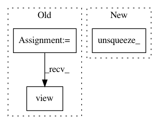

0d71a7f9e0fdabca092d632e3a14b8a1faecdd08,face_alignment/api.py,FaceAlignment,get_landmarks_from_image,#FaceAlignment#Any#Any#,133
Before Change
if pts[i, 0] > 0:
heatmaps[i] = draw_gaussian(
heatmaps[i], pts[i], 2)
heatmaps = torch.from_numpy(
heatmaps).view(1, 68, 256, 256).float()
heatmaps = heatmaps.to(self.device)
depth_pred = self.depth_prediciton_net(
After Change
if pts[i, 0] > 0:
heatmaps[i] = draw_gaussian(
heatmaps[i], pts[i], 2)
heatmaps = torch.from_numpy(
heatmaps).unsqueeze_(0)
heatmaps = heatmaps.to(self.device)
depth_pred = self.depth_prediciton_net(
In pattern: SUPERPATTERN
Frequency: 3
Non-data size: 3
Instances
Project Name: 1adrianb/face-alignment
Commit Name: 0d71a7f9e0fdabca092d632e3a14b8a1faecdd08
Time: 2018-10-05
Author: adrian.bulat@wsc-1802-2.seri.co.uk
File Name: face_alignment/api.py
Class Name: FaceAlignment
Method Name: get_landmarks_from_image
Project Name: catalyst-team/catalyst
Commit Name: 447444fd06594e531ae1141afac78051481e4468
Time: 2019-10-31
Author: scitator@gmail.com
File Name: catalyst/rl/offpolicy/algorithms/sac.py
Class Name: SAC
Method Name: _quantile_loss